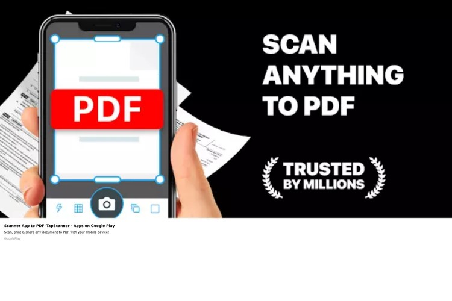

5 Aplikasi Scanner Gratis untuk Android dan iPhone
Posted By: Prisma Aditya Januari 11, 2022
4. SwiftScan
SwiftScan merupakan aplikasi scanner gratis. Selain memindai dokumen, aplikasi ini juga bisa digunakan untuk memindai kode QR. Aplikasi ini memiliki fitur-fitur seperti memindai dokumen dengan kualitas tinggi, fitur untuk membagikan file melalui e-mail, serta untuk men-upload ke berbagai penyimpanan cloud. SwiftScan merupakan keluaran developer Maple Media LLC dan mendapat rating 4.6 sampai 4.8 dari lima di Play Store dan App Store. Memiliki ukuran 66 MB di Android dan 234,7 MB di iOS dan dapat Anda unduh secara gratis di Play Store maupun App Store.
5. TapScanner
Satu lagi aplikasi scanner gratis yang dapat Anda unduh di Android dan iOS adalah TapScanner. Aplikasi ini memiliki fitur scan dokumen dengan kualitas tinggi, QR scanner, dan berbagi file dengan mudah. TapScanner merupakan aplikasi keluaran dari developer Smart Media Internet Marketing LTD yang memiliki ukuran aplikasi 80 MB untuk iOS dan 25 MB untuk Android dengan rating 4.7 sampai 4.8 dari lima. Anda dapat mengunduhnya secara gratis di Play Store maupun App Store. Itulah lima aplikasi scanner gratis yang bisa Anda manfaatkan untuk berbagai keperluan scan dokumen penting anda.
SEBELUMNYA